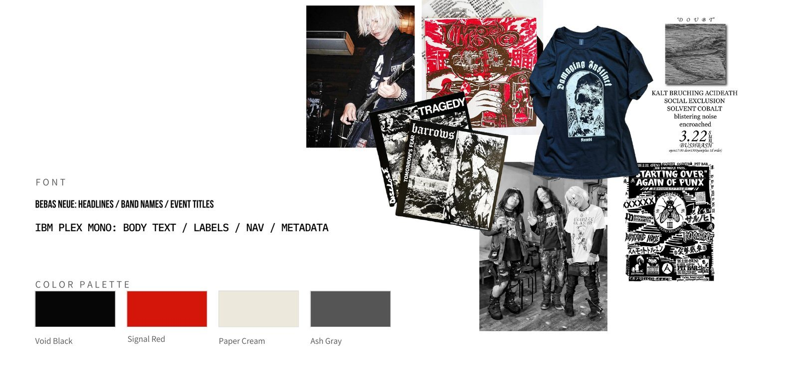
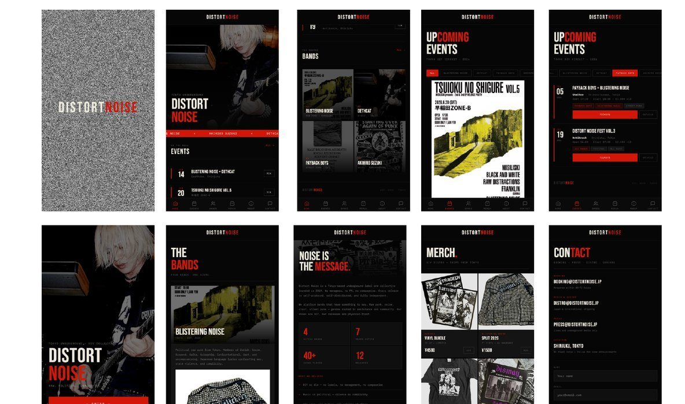
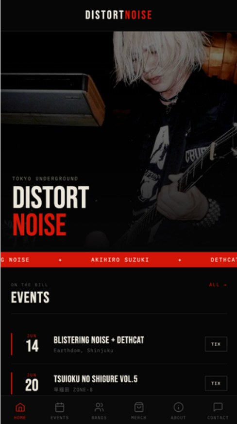
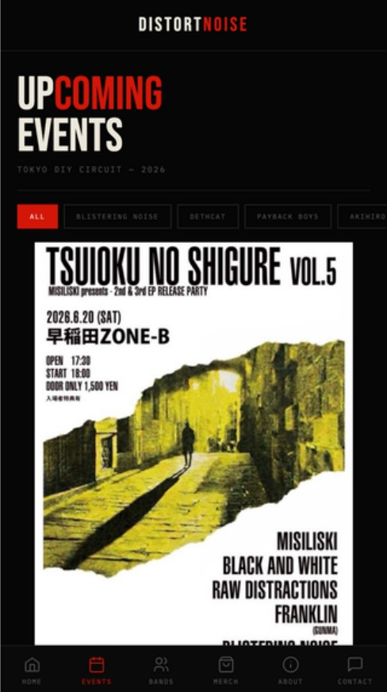
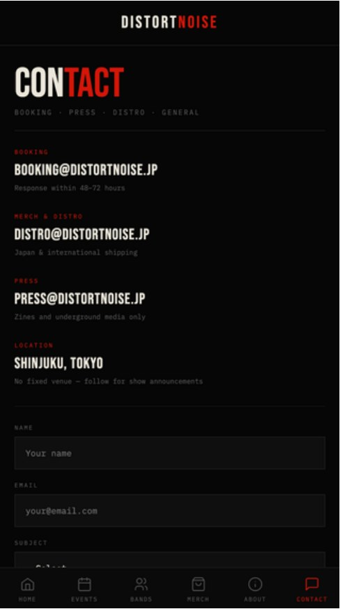

01
Concept
Bands, merch, events and artists in one app, drawn from flyers, zines and band merch.

Bands, events, merch and artists in one app

Overview
An app for a Tokyo underground label and collective: one place for its bands, gigs, merch and contact, designed in Illustrator and built with Claude Code.
Brief
Bring a label's bands, merch, events and artists into one app that still feels like the scene it comes from.
Approach
The visual language is drawn from flyers, zines and band merch. Bebas Neue carries headlines, band names and event titles; IBM Plex Mono carries body text, labels, navigation and metadata.
Bands, merch, events and artists in one app, drawn from flyers, zines and band merch.

A static-noise loading screen that resolves into the landing page.

Ten screens across home, events, bands, about, merch and contact.










Next, 04
TIME